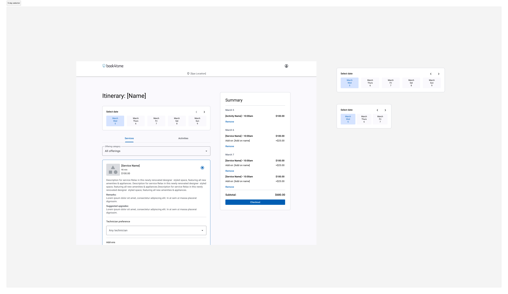
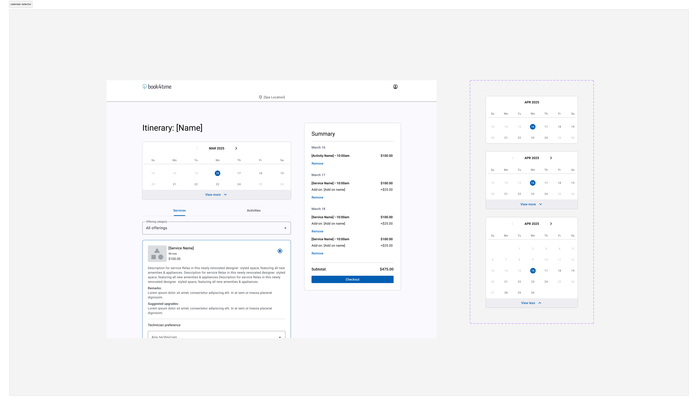
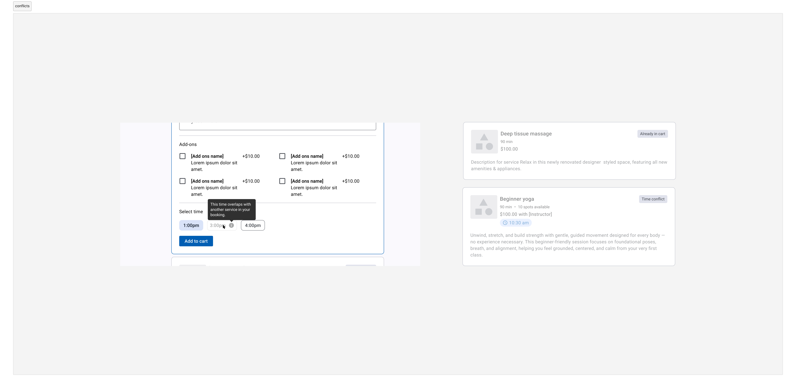
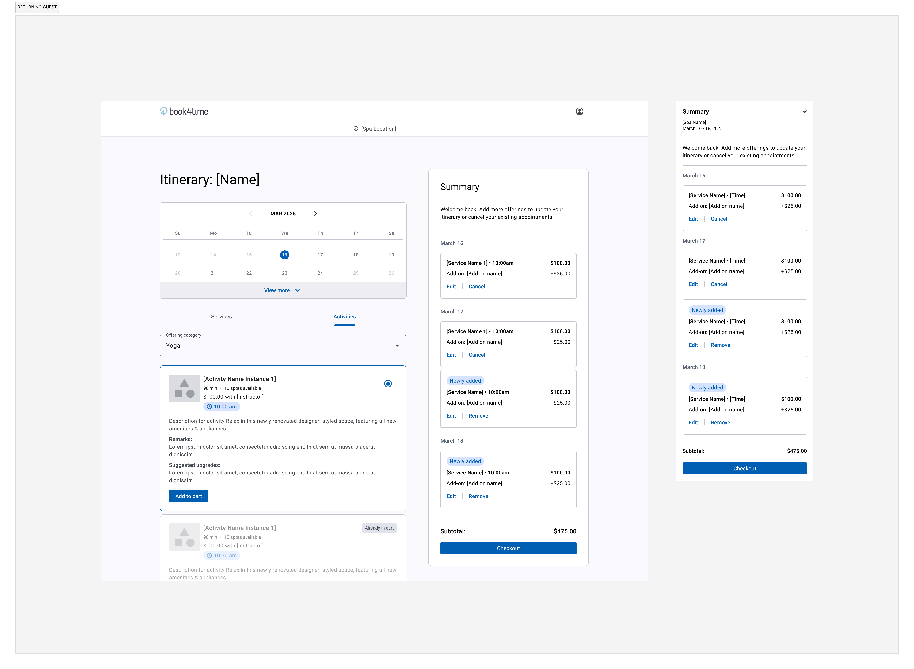

01 — Context
A platform that couldn't keep up with its own customers
Agilysys (formerly Book4Time) powers spa, wellness, and hospitality operations across luxury resort properties worldwide. But the platform had a critical gap: it only supported single-day appointments. Guests booking multi-day wellness retreats, which are common at high-end resorts, had no way to plan their full stay in one session.
The result was accidental double-bookings, excessive staff workload resolving scheduling conflicts, and lost revenue from empty activity slots. The bottleneck was preventing the business from winning enterprise clients who required it.
From competitor audit
Every competitor had the same failure point: conflict detection surfaced at checkout, after the guest had already committed to an itinerary. The opportunity was to move it upstream, to the moment of selection, before any commitment was made.
02 — Problem
Two problems, one broken experience
The booking failure had a user side and a business side, and each made the other worse.
Lost mid-booking
Guests couldn't track what they'd already booked across multiple days, triggering constant back-navigation and front-desk calls to complete reservations.
Compounding errors
No multi-day support meant double-bookings, empty slots, and a high-touch manual conflict resolution process that couldn't scale to enterprise clients.
03 — Research
Grounding decisions in operations, not assumptions
I combined staff interviews, session replays, and a competitor audit to find the root causes.
Staff interviews
5 interviews with ops teams
- Revenue lost to accidental double-bookings
- Real-time conflict detection flagged as critical
- High manual resolution rate forced onto staff daily
Session replay
8 recorded booking sessions
- Users couldn't recall what they'd already booked
- Constant back-navigation throughout the flow
- Clear need for a persistent, always-visible itinerary
Competitor audit
Multi-day solutions existed, but poorly
- Conflict detection only surfaced at checkout
- No persistent itinerary summary while browsing
- Weak mobile experiences across all competitors
Three findings shaped every design decision that followed: guests couldn't track what they'd booked, every competitor detected conflicts too late, and staff were resolving manually what the product should catch automatically. The problem was structural, so the solution had to be too.
04 — Key decision
The date-selector decision that cut conflicts by 27%
Date selection was the highest-stakes design decision, because getting it wrong would cascade errors through the entire booking flow. I tested two different models.
Version A
5-Day Quick Selector
- Faster for short stays
- Created friction for longer retreats
- Users felt constrained beyond 5 days
- Higher conflict rate during testing
Version B Selected
Calendar Selector
- Only valid dates within check-in/out range selectable
- Users reported feeling more in control
- 27% fewer conflicts recorded during testing
- "I know exactly where everything is in my week."


Version B matched how guests actually plan a retreat: around their arrival and departure. Only allowing selections within the confirmed check-in/check-out window looked like a limitation, but it was what guests wanted. They didn't need unlimited flexibility. They needed a clear window to plan within. Version A gave them more choices and more errors. Version B gave them fewer choices and 27% fewer conflicts.
05 — Solutions
Three design decisions that changed the flow
Final designs adjusted per NDA. Contact fionaqylai@gmail.com for the full case study.
Answers: Lost mid-booking1. Persistent itinerary summary
The single biggest insight from session replays was "I can't remember what I booked already." The solution was a sticky right-hand panel on desktop that updates in real time through the whole booking session, with no extra navigation. On mobile, where a sticky panel would take up too much of the screen, a bottom sheet opens on demand so the itinerary stays one tap away.

2. Real-time conflict detection
Rather than surfacing scheduling conflicts at checkout (a common failure in competitor audits), the system flagged conflicts inline as guests made selections. This moved error prevention upstream, catching problems at the moment of selection instead of after the guest had committed to a full itinerary.

3. Design system contribution
The new booking work had to fit cleanly with the rest of the product. I audited reuse opportunities across existing flows and extended core patterns (cards, date-picker, summary modules) to support multi-day logic instead of building new ones. The new components (the itinerary summary card, the conflict indicator, and the edit badge) were documented with full interaction states, responsive rules, and usage guidelines, so any engineer picking up the handoff could implement them correctly without a sync.

06 — Phase 2
Edit functionality without new back-end scope
Returning guests needed to modify existing reservations, but a separate back-end flow was out of scope for engineering. My solution was to reuse 95% of the original booking components.
Returning guests land on their existing booking summary. Confirmed appointments display with a Cancel option, which cancels an already-checked-out booking. Newly browsed services not yet booked show a Remove option instead, which simply drops them from the in-progress selection without touching any confirmed reservation.
Tapping "Edit" reopens the original configuration component in context, and newly added services get a badge so changes are clear. The same components handle two distinct actions, which gave us full functionality with minimal new development.

07 — Outcomes
Results that moved the business
- 40–53% reduction in booking errors
- 57% fewer support tickets from guests mid-flow
- Secured the first major resort group, making multi-day booking a sales differentiator for future enterprise deals
- Enabled fully self-service multi-day bookings for the first time on the platform
- Edit functionality delivered without additional back-end scope, saving weeks of development
08 — Reflection
Structural decisions outweigh visual ones every time
The most impactful decisions were structural, not visual: surfacing conflict detection inline instead of at checkout, and designing the edit flow to reuse existing components instead of building new ones. Both needed close collaboration with engineering from the start.
The competitor audit was more useful than I expected, mostly for showing what not to do. Every competitor had the same weakness: conflicts surfaced at checkout, after guests had already committed to an itinerary.
The problem was costing real revenue and client relationships. Grounding decisions in research and working within engineering constraints turned a fragmented flow into a product Agilysys could take to enterprise clients and win.